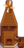

Azúcar
| Azúcar | |||||
| Añade dulzura a repostería y dulces. Demasiado puede perjudicar la salud. | |||||
| Información | |||||
| Origen | Molino, Pierre's, MercaJoja | ||||
| Energía / Salud |
|
||||
| Precio de venta | |||||
| Fabricación | |||||
| Máquina |  Molino | ||||
| Ingredientes | |||||
| Produce | 3 azúcar por 1 remolacha | ||||
El Azúcar es un ingrediente de cocina que se puede usar en diversas recetas. Puede comprarse en la Tienda local Pierre's por  100o o en el MercaJoja por
100o o en el MercaJoja por  125o durante todo el año.
125o durante todo el año.
Se puede fabricar azúcar a partir de remolachas usando el molino. Una vez depositas la remolacha en el molino, este producirá azúcar. Aparecerá el azúcar en la caja al lado del molino a la mañana siguiente.
Recetas
| Imagen | Nombre | Descripción | Ingredientes | Energía / Salud | Bonificadores | Duración | Origen receta | Precio de venta | |||
|---|---|---|---|---|---|---|---|---|---|---|---|
| Tarta de moras | No hay nada comparable a esto. | N/A | N/A |
|
|||||||
| Tarta de arándanos | Sutil y refrescante. | N/A | N/A |
|
|||||||
| Pastel de chocolate | Rico y jugoso, con un grueso glaseado de ganaché. | N/A | N/A |
|
|||||||
| Galletas | Deliciosamente densas. | N/A | N/A |
|
|||||||
| Dulce de grosellas | Lo suficientemente dulce para disfrazar el amargor de la fruta. | N/A | N/A |
|
|||||||
| Salsa de grosellas | Un capricho festivo. |
|
|||||||||
| Ñames glaseados | Dulces y sustanciosos... El azúcar les da un toque acaramelado. | N/A | N/A |
|
|||||||
| Helado | Difícil encontrar a alguien a quien no le guste. | N/A | N/A |
|
|||||||
| Bollito de arce | Un bollo dulce con un rico glaseado de arce. |
|
|||||||||
| Capricho de minero | Mantiene tu energía muy alta. | ||||||||||
| Pastel rosa | Con caramelos en forma de corazón. | N/A | N/A |
|
|||||||
| Pudin de ciruela | Un postre festivo tradicional. | N/A | N/A |
|
|||||||
| Muffin de amapola | Tiene un efecto tranquilizante. | N/A | N/A |
|
|||||||
| Tarta de calabaza | Sedosa crema de calabaza sobre una masa de hojaldre. | N/A | N/A |
|
|||||||
| Tarta de ruibarbo | ¡Mmm, ácida y dulce! | N/A | N/A |
|
|||||||
| Arroz con leche | Cremoso, dulce y divertido de comer. | N/A | N/A |
|
Regalos
| Reacciones de Aldeanos
| |
|---|---|
| No le gusta | |
| Odia | |
Historial
| Ingredientes | |
|---|---|
| Ingredientes | Harina de trigo • Azúcar • Arroz • Aceite • Vinagre |